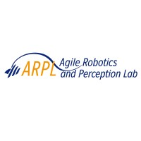

Hi, my name is
Building autonomous UAVs, UGVs, and robotic systems at NYU ARPL
Explore My WorkHello! I’m Tarun — a robotics engineer who loves building autonomous systems that actually work in the real world (where sensors get noisy, batteries sag, and nothing behaves exactly like the simulation).
I’ve been working on robotics projects for 6+ years, starting back in high school. That’s where I got hooked — building things from scratch, breaking them, fixing them, and slowly getting better at turning messy ideas into something that moves with purpose. Over time, I ended up leading my school robotics team, and that experience shaped how I think: iterate fast, test early, and never trust a system until it survives real conditions.
In undergrad, I went deep into drones and autonomy. I led our drone/UAV team, built multiple platforms, and took them to competitions — which were basically the best “real-world robotics” training you can get. When you’re under time pressure and your drone has to fly reliably, you learn quickly how important good integration is across perception, planning, and control.
I’ve also really enjoyed mentoring along the way. I’ve guided junior students through design thinking and practical engineering workflows — how to define the problem clearly, explore solutions, prototype quickly, and iterate based on testing instead of guesses. Helping someone go from “I don’t know where to start” to shipping a working build is one of my favorite parts of team robotics.
Over time, my projects expanded beyond aerial robotics into ground and underwater platforms too, which gave me a wider view of autonomy across very different constraints and environments. I’ve worked end-to-end across the robotics stack — perception, planning, and control — and I like projects where those pieces come together into a system that feels “alive.”
Right now, I’m pursuing my Master's in Mechatronics and Robotics at NYU Tandon School of Engineering, where I’m a Graduate Research Assistant at the Agile Robotics and Perception Lab, working on quadrotor perception systems.
Here are some technologies I've been working with:

NYU Agile Robotics & Perception Lab
August 2024 - Present
New York University
September 2025 - Present
Garuda Aerospace Pvt. Ltd.
June 2023 - August 2023
Aerospace Systems Research Lab, SRM
January 2022 - May 2024
My Equation
March 2021 - December 2022
Natural Language Drone Control. This project bridges the gap between natural language understanding and autonomous robotic control, enabling users to command a drone using plain English instructions like "track the person in the red shirt". It leverages Large Language Models (LLMs) to interpret complex intents and attribute descriptions.
At the core is a novel Hierarchical Perception Pipeline fusing Vision-Language Models (VLMs) with YOLOv11. The VLM semantically identifies the correct target based on user description, while YOLO maintains high-frequency (30fps) tracking, creating a system that is both semantically smart and reactively fast.
Decentralized Autonomy Stack for Heterogeneous Swarms. Built a three-layer framework for UGVs + UAVs operating in confined indoor spaces with narrow door bottlenecks: (1) Decentralized goal assignment using DGNN-GA with iterative message passing, (2) Swarm coordination to preserve connectivity and prevent congestion, and (3) Local collision-free motion control.
Implemented and validated the decentralized coordination pipeline: prototyped flocking behavior in MATLAB, ported to ROS 2 Humble with Unity3D simulation. Used Extended Olfati–Saber Flocking controller with tuned gains for cohesive formation and controllable oscillations.
Real-time Parachute Deployment Fail-Safe for UAVs. A complete emergency recovery system built around a Propeller microcontroller with dual IMU redundancy—combining an external IMU with the UAV's onboard flight controller IMU for robust safety sensing. The system uses Mars-Rover–inspired descent sequencing with altitude-triggered deployment and state transitions.
Features a distance sensor for ground proximity detection that triggers a servo-actuated retractable landing gear for softer landings. The firmware handles fall detection, motor-power-loss detection, emergency override, and safe system disarm conditions.
PPO-based Locomotion Policy for Unitree Go2. A robust walking policy trained using Proximal Policy Optimization (PPO) in Isaac Lab with carefully engineered MDP beyond simple velocity-tracking. The environment runs at 200 Hz sim with 50 Hz policy control, using a 12-DoF joint position action space with clock-phase inputs (sine/cosine) for gait timing and a manual PD torque controller (Kp=20, Kd=0.5).
Behavior is shaped using rewards for linear XY and yaw command tracking, Raibert-style trot gait shaping, and smoothness/stability regularizers. For sim-to-real robustness, a randomized actuator friction model with episode-wise randomization is implemented. The policy converges quickly with strong command tracking metrics.
CalTech M4 Morphbot-Inspired Hybrid Robot. A morphing robot designed for search and rescue that seamlessly transforms between UAV and UGV modes. The system autonomously flies to designated locations for rapid response, then transitions to ground mode in complex terrains—shifting from dynamically to statically stable locomotion for significantly reduced power consumption.
Features 8 actuators (4 BLDC for flight, 2 DC motors for wheels, 2 servos for reconfiguration), GPS/telemetry for real-time navigation, FPV camera with 5.8GHz video transmission, and topology-optimized wheels with 1:10 gear ratio. Built with PLA+ and carbon fiber chassis.
Autonomous Indoor/Hospital Navigation Robot. An exploration robot designed to autonomously deliver supplies to specific rooms after receiving commands from staff. The system combines an RPLIDAR 2D scan for reliable obstacle sensing with an Intel RealSense D435i RGB-D stream to support SLAM-based mapping (occupancy grid / point cloud) and safe navigation in dynamic indoor environments.
Features an end-to-end robotics stack with Raspberry Pi 5 running ROS nodes for mapping and obstacle avoidance, and Arduino Uno for low-level interfacing. Uses DC motors with encoders and 10:1 gear reduction for controllable torque and precise movement, validated through unit tests and closed-loop navigation demos.
Image-Only Navigation Without Maps or GPS. A vision-based navigation system that guides a robot through a maze using only camera images—no map, GPS, or odometry required. Uses CosPlace (ResNet) for 512-D global descriptor extraction with BallTree KNN retrieval (~1–2 ms), verified by SuperPoint + SuperGlue with Essential Matrix RANSAC inlier counting to reject perceptual aliasing and viewpoint changes.
Constructs a robust topological graph with edges only when appearance similarity (CosPlace distance < 0.25) and geometric consistency (≥80 inliers) are satisfied. Navigation uses A* shortest-path planning with recovery logic: stuck detection, rotational search mode, and waypoint locking to prevent oscillations.
ROS-Based Agricultural Drone with Ground Coordination. An autonomous agricultural drone powered by Pixhawk 6X, designed for precise flight and targeted payload delivery in farming operations. Features a robust autonomy stack with PID-based stabilization and tracking, enabling repeatable waypoint navigation and accurate dispensing for safe, consistent field operations.
Part of a coordinated ground + aerial agricultural system: the drone docks for automatic charging and rapid fertilizer refill on a ground robot that serves as a mobile "service station" with onboard power supply and fertilizer stock—reducing downtime and enabling longer, scalable farm missions.
Autonomous Dry Sweeping & Wet Mopping Robot. A cleaning robot prototype that performs both dry sweeping and wet mopping with sensor-driven autonomy. Uses ultrasonic sensing for obstacle detection and collision avoidance while maintaining coverage. Features moisture/humidity feedback on the sponge with a water tank + pump system to maintain sponge wetness and switch behavior based on water availability.
Built with end-to-end mechatronics integration: CAD-based mechanical layout, laser-cut transparent acrylic chassis with 3D-printed standoffs, and full wiring/circuit integration. PBASIC (Basic Stamp 2) control logic handles moisture reading for wet/dry mode switching, servo-actuated sweeping/mopping, and ultrasonic-triggered obstacle avoidance.
6-Thruster ROV for Underwater Exploration. A compact remotely operated vehicle (300×300×200 mm) designed for underwater exploration and inspection with strong maneuverability and automatic resurfacing safety. Features A2212 1000KV BLDC motors with 30A ESCs in an optimized 45° forward/rear thruster configuration that balances forces, reduces yaw moments, and improves straight-line tracking underwater.
Built with a PVC watertight hull and PETG 3D-printed thruster casings/propellers, powered by a 3S 4200 mAh LiPo via power distribution board. Control through Pixhawk + ArduSub (ArduPilot) for stable motion control and sensor integration. Validated through buoyancy tuning, thrust/maneuver tests, and demonstration runs.
Hexacopter UAV for Autonomous Waypoint Missions. A stable, payload-capable platform designed for manual flights and autonomous waypoint missions. Features end-to-end airframe + propulsion sizing with carbon-fiber plate + 3K CF tube arm layout, optimized through topology/structural checks for high stiffness at low mass. Symmetric dual-battery placement ensures balanced center of gravity for predictable handling.
Integrated complete avionics stack: Pixhawk Cube Orange + Here3 GPS, high-current ESC modules with filtering, and Mission Planner for GPS missions (takeoff → waypoint tracking → RTH). Features a servo-actuated payload bay with locked double-door drop mechanism for clean payload release without destabilizing the vehicle.
Medium-Class High-Altitude Research Drone. A payload-capable UAV designed to carry 3 kg of atmospheric sensors to high altitudes. Powered by custom Molicell 21700 battery packs optimized for high flight time without compromising weight, enabling extended research missions at altitude.
Developed in collaboration with NARL (National Atmospheric Research Laboratory). Successfully conducted multiple flight tests with UAVs equipped with atmospheric sensors, reaching altitudes of 1 km+ and now targeting 2.5 km for future atmospheric research missions.
High-Speed Payload Pickup Drone. A high-speed, agile drone engineered to grasp and carry a 500 g payload while completing a full pick-and-loop mission as fast as possible. Features a lightweight yet rigid airframe optimized through topology optimization, strict weight budgeting, and aerodynamic shaping to minimize drag without compromising maneuverability during aggressive turns and acceleration.
Incorporates intentional airflow paths to cool internal electronics under high-throttle operation, improving reliability across repeated runs. Recognized as one of the fastest drones to complete the payload pickup and loop mission at the World Robotics Championship (Technoxian).
5-Legged Rescue Robot for Disaster Environments. A multi-legged robot designed to overcome limitations of wheeled platforms on rubble/uneven terrain. Features a distributed ESP32-based embedded system driving 12 MG995 servos with an alternative gait algorithm supporting forward/backward motion and in-place rotation while maintaining platform stability.
Wireless teleoperation via ESP-NOW with dual-joystick control, plus ESP32-CAM live video stream for real-time monitoring. Integrated human detection using HOG features + SVM classifier for "find-and-verify" rescue scouting capability. 3D-printed construction for improved durability and rapid prototyping.
Kinematic Control & Trajectory Tracking. Implemented forward and inverse differential kinematics for a 4-DOF SCARA manipulator using DH parameterization. Developed trajectory tracking controllers using both Jacobian inverse and Jacobian transpose methods, with Euler integration (1 ms timestep) for smooth end-effector motion along position and velocity reference paths.
Extended to second-order inverse kinematics with obstacle avoidance by exploiting manipulator redundancy. Used Jacobian pseudo-inverse to relax operational space constraints while maximizing distance from spherical obstacles along the trajectory—demonstrating practical collision-free motion planning in MATLAB/Simulink.

Dassault Systems · 2023

Dassault Systems · 2023

Dassault Systems · 2023

IIT Kharagpur · 2022
I'm currently looking for full-time opportunities in robotics and autonomous systems. Whether you have a question, a project idea, or just want to say hi, my inbox is always open!
Say Hello